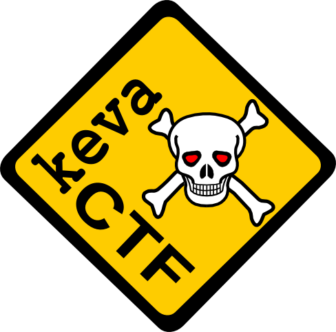
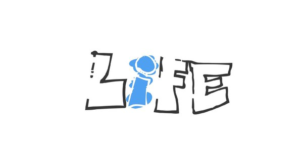
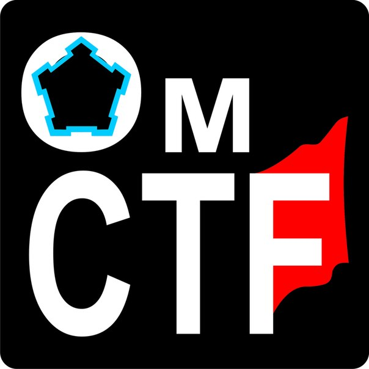
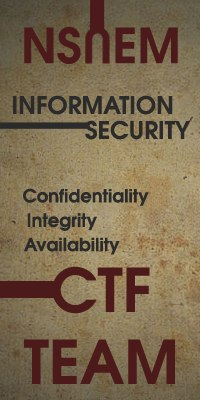

FHQ2015
FHQ2015 - это соревнования среди студентов (личный зачет) университета в области информационной безопасности. Множество соревнований проходят каждый год, организуемые множеством команд по всему миру. Почти каждый университет имеет свою команду.
FHQ2015 - это соревнования ориентированные на поиск талантливых людей которые могут пополнить состав местной команды, ну а также просто повеселиться с нами.
Даты проведения соревнований: с 14.09.2015 по 20.09.2015, также после окончания соревнований будет проведен разбор заданий местной командой организаторов.
Регистрация и Задания
http://fhq.keva.suПосле соревнований: все задания будут перемещены в online архив http://fhq.sea-kg.com, где вы сможете продолжить решать задания
Тип соревнований: online, jeopardy
Регламент: можно скачать тут
Объявление (от ufologist): можно скачать тут PDF, a тут AI
Объявление (от keva): можно скачать тут PDF, a тут SVG
{kind=link}
Если же в вашем университете нет команды, то мы можем посодействовать в ее создании, обратитесь к людям которые указаны в регламенте.
Команды организаторы:
|  | keva, г. Томск, ТУСУР. Команда существует с 2008 года. На текущий момент представляет Факультет Безопасности университета ТУСУР. Тренер команды Гуляев Алексей Игоревич (kondorbrn@gmail.com) Команда является организатором SibirCTF 2014 и SibirCTF 2015. Также FHQ с 2012 года. |
| ufologist, г. Таганрог, ИТА ЮФУ. Команда создана в 2008 году на базе кафедры Безопасности Информационных Технологий Таганрогского Радиотехнического Университета (ныне. ИТА ЮФУ). Команда является организатором соревнований UFO CTF 2009 (classic) и 2013 (task based). C 2014 года организует всероссийскую олимпиаду школьников по информационной безопасности UFO CTF School в формате task based CTF. В 2013 году входила в топ10 рейтинга ctftime.org и.о. капитана Кобилев Максим (mkobilev@gmail.com) | |
|  | life, г. Новосибирск, СибГУТИ. Команда создана 1 апреля 2013 года на базе кафедры Информационной безопасности телекоммуникационных систем СибГУТИ. Принимала участие в различных межрегиональных соревнованиях. С 2015 года является организатором школьных городских соревнований по информационной безопасности Sibsutis School CTF. Капитан команды Максим Смирнов (life@sibsutis‐ctf.ru). |
|  | OmCTF, г. Омск. Клуб "OmCTF" исследователей информационных технологий и систем (участники CTF-движения в Омской области, «WHITE HAT»), состоящий из молодых преподавателей и студентов вузов: ОмГТУ, ОмГУ, СибАДИ, ОмГУПС и Омского авиационного колледжа |
|  | FoXXeS, г. Новосибирск, НГУЭУ. Команда организована осенью 2014 на базе кафедры Информационной безопасности Новосибирского Государственного Университета Экономики и Управления. Основной состав летом 2015 уже выпустился, по-этому постараемся собрать новых, молодых, зеленых и сделать из них достойных представителей вида Homos WhiteHatus. Контактное лицо: Курносов Кирилл (dontpanic@ngs.ru) |